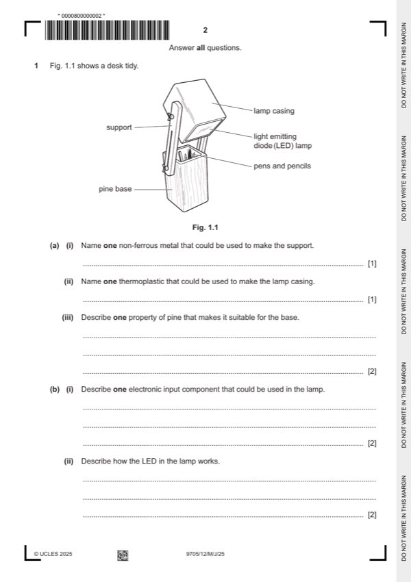

Question 1

Original paper page 2
Part 1(a)(i) — solution
Exemplar answers: 1 AOVR
Aluminium [1], copper [1], brass [1], duralumin [1] Do not award a mark for stainless steel.
Allow any non-ferrous metal including precious metals, such as gold
or silver.
Mark points
- Include the ideas shown in the solution above.
Part 1(a)(ii) — solution
Exemplar answers: 1 AOVR
High impact polystyrene (HIPS) [1], polyvinyl chloride (PVC) [1], Do not award a mark for plastic or polymer.
polystyrene (PS) [1]
Award marks for just acronyms such as ABS, PLA, PMMA and PP.
Mark points
- Include the ideas shown in the solution above.
Part 1(a)(iii) — solution
- Easy to cut/shape and join [1] to make the base. [1] Property of pine = 1 mark (award for stating it is a
- Pine is relatively inexpensive to purchase [1] so it is a cost effective the base = 1 mark
Mark points
- Easy to cut/shape and join [1] to make the base. [1] Property of pine = 1 mark (award for stating it is a
- Pine is relatively inexpensive to purchase [1] so it is a cost effective the base = 1 mark
Part 1(b)(i) — solution
- A switch (SPST) [1] will switch the LED on and off. [1] Input component = 1 mark
- in the lamp = 1 mark
Mark points
- A switch (SPST) [1] will switch the LED on and off. [1] Input component = 1 mark
- in the lamp = 1 mark
Part 1(b)(ii) — solution
- The LED converts electrical energy [1] into light. [1] Emits light = 1
- Electric current [1] passes through a diode that emits light. [1] Description of how an LED works = 1
Mark points
- The LED converts electrical energy [1] into light. [1] Emits light = 1
- Electric current [1] passes through a diode that emits light. [1] Description of how an LED works = 1